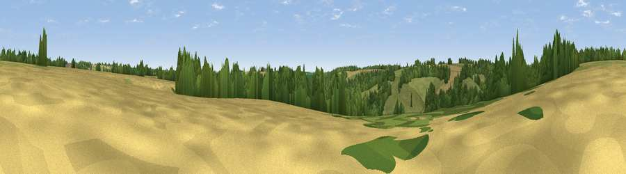

Viewpoint near Miserden
#33198 in England · top 65% of its area beats it · near MiserdenThe view, rendered

A 360° render of this exact spot computed from the terrain model, tree cover and land cover — summer colours, afternoon light, calibrated against photographs of famous viewpoints. Real trees, hedges and buildings will differ in detail.
The panorama
Grey silhouette: terrain skyline in each direction (720 bearings, Earth curvature and refraction included). Dashed green: skyline with trees (+15 m) and buildings (+8 m) as obstacles. Blue strip: how far the ground is visible on each bearing.
Where the view opens
Wedge length = distance to the farthest visible ground on that bearing (vegetation-aware). Rings at 10, 25 and 50 km.
What fills the view
45% woodland · 36% grassland · 19% cropland
Angular shares of the visible panorama (visual magnitude), not map area. Landscape diversity 0.46 (0–1 Shannon).
Key numbers
More beautiful places nearby
The staircase of upgrades: each row has a higher view potential than everything closer. Driving times are estimates from straight-line distance, calibrated against real road routing — check an actual route before setting out.
| Place | Direction | Drive | Score |
|---|---|---|---|
| Viewpoint near Elkstone | N · 3 km | ~8 min | 49.9 |
| Viewpoint near Whiteway | W · 4 km | ~8 min | 50.0 |
| Pen Hill | NE · 6 km | ~13 min | 66.4 |
| Birdlip Hill | NNW · 6 km | ~13 min | 71.7 |
| Viewpoint near Witcombe | NNW · 8 km | ~16 min | 72.2 |
| Viewpoint near Great Witcombe | NW · 8 km | ~17 min | 80.5 |
| Nottingham Hill | N · 20 km | ~34 min | 80.9 |
| Viewpoint near Bredon's Norton | N · 31 km | ~48 min | 81.3 |
51.77582, -2.07278 · source: screening · position refined by local search. Computed location — check access rights before visiting.